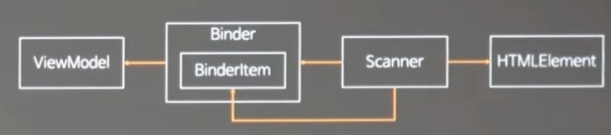
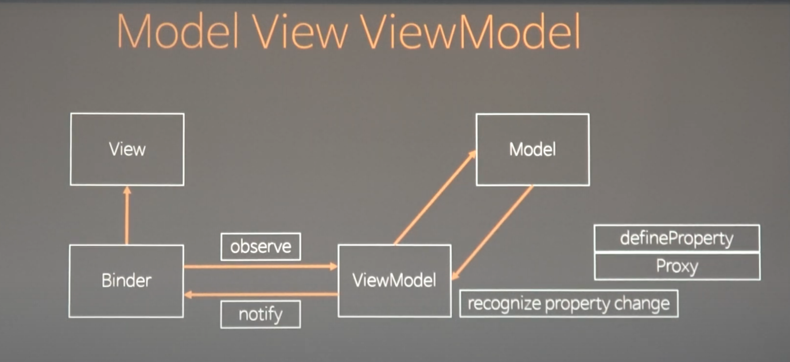
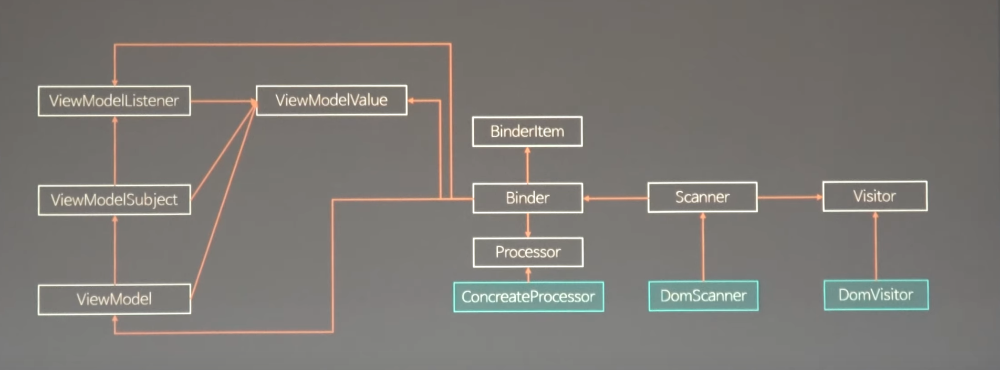
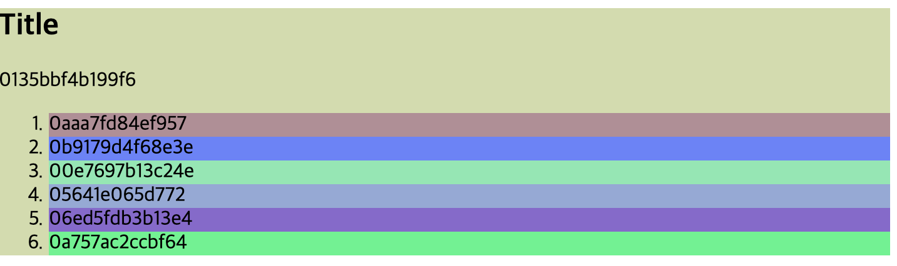

![코드스피츠 [객체지향 자바스크립트] 돌아보기](/images/codespitz.png)
코드스피츠 [객체지향 자바스크립트] 돌아보기
코드스피츠 86 - 객체지향 자바스크립트 강의를 정리해봅니다.
프로그래밍의 기준을 어디에 둘까요?
Value Context: 메모리 주소에 관계없이 값이 같다고 보면 같은 것이라 보는 관점 (값 기반)
- 할당하거나 가져올 때, 값을 사용한 경우는 끝없이 복사본을 만든다.
- 상태가 관리되서 안전한게 아니라, 계속 불변하는 값들을 만들어내서 안전해 보이는 것일뿐
- 연산을 기반으로 로직을 전개 identifier Context: 힙 메모리에 있는 주소로 보는 관점 (식별 기반)
기준을 정했으면, 하나의 컨텍스트만 쓰는 것을 권장합니다.
1 | // 오브젝트 객체의 리터럴로 값을 만드는 방법 |
객체지향 세계
- 객체는 하나의 원본입니다.
- 내부의 상태관리를 책임지는 객체입니다.
- 메시지를 통해서 위임해서 로직을 전개합니다.
- 객체 지향은 value context 를 쓰지 않습니다.
Polymorphism
substitution (대체 가능성)
- 확장된 객체는 원본으로 대체 가능합니다. (자식은 부모를 대신할 수 있습니다)
internal identity (내적일관성)
- 생성 시점의 타입이 내부에 일관성 있게 참조됩니다. (어느시점에서든 만들어질 때 상태를 유지합니다)
ex) 오버라이딩: 부모함수를 덮어서 없애고 자식함수로 대체하는 것을 말합니다.
1 | const Worker = class { |
Object Essentials (객체의 본질)
- Maintenance of State (데이터를 은닉)
: 객체의 속성이 모두 프라이빗이면서 내 데이터를 관리합니다. - Encapsulation of Functionality (기능의 캡슐화)
: 메소드를 감춥니다. 외부에 캡슐화해서 제공합니다. - Isolation of Change (격리)
: 변화의 여파를 막고 격리시킵니다. 오염시켰을 때, 전역 처리기를 걸어둡니다.
1 | const EssentialObject = class { |
알려진 기본 설계요령 (SOLID 원칙)
SRP (Single Responsibility) 단일책임
코드를 고쳐야하는 이유는 하나뿐이야라고 만드는 방법입니다.
잘못하게 되면 산탄총 수술이 필요하게 됩니다.
다른 객체에게 의뢰한다 = 다른 객체에게 메시지를 보내는 것.OCP (Open Closed) 개방폐쇄
기존의 객체를 건드리지 않게 설계를 해야합니다.
새로운 문제가 일어났으면 새로운 객체를 만들어서 새로운 것에 대한 해결책만 내릴 수 있게 만듭니다.인터페이스나 추상클래스를 상속받아서 처리합니다. 그 다음번 문제도 추상화를 받아서 해결합니다.
LSP (Liskov Substitution, 리스코프 치환)
부모쪽으로 캐스팅해서 형을 변환하는 것을 말합니다.(업캐스팅)
Ex) 추상층: 생물(숨을 쉰다) 구상층: 사람(생물, 다리로 이동한다), 타조(생물, 다리로 이동한다), 아메바(생물)
ISP (Interface Substitution, ISP 치환)
리스코프 치환법칙을 위반(똑같은 위치에서 같은 기능을 하는 경우에 위임이 불가능할 경우)하게 되면, 인터페이스로 분리하도록 해봅니다.
역할에 맞게 분리해서 만들어야합니다.
- 소유 방법으로 분리한다.
- 인터페이스를 만들어서 오버라이딩하면 됩니다.
DIP (Dependency Inversion)
의존성 역전의 법칙, 의존성은 항상 부모에서 자식으로만 상속됩니다.
1 | const Manager = class { |
용어 정리
- DI (Dependency Injection) 의존성 주입
- DRY 중복방지
- Hollywood Principle 의존성 부패방지
물어보지 말고 요청하지 않습니다.. ex) 시간날 때, 나한테 연락을 줘.- Law of demeter 최소 지식
최소한의 지식만 가지고, 내부에서 객체의 타입, 원래 필드의 타입, 인자로 가져온 객체의 타입만 알게 합니다.
너무 많아지면, train wreck (열차전복) 현상이 일어납니다.- Inversion Of Control 제어 역전
flow control (흐름 제어) = 역으로 대치하겠다. 즉, 위임하겠다라는 의미입니다.
프로그램 실행 통제 : 어떠한 흐름으로 제어할지 결정하는 것입니다.
제어를 추상화하고 제어문을 한번만 작성하면, 일반화합니다.
개별 제어의 차이점만 외부에서 주입합니다.
실제구현: 전략패턴 & 템플릿 메소드 패턴 < 컴포지트 패턴 < 비지터 패턴
SRP 준수하는 객체망이 문제를 해결하는 방법은 뭘까요?
다른 객체에게 의뢰하는 것입니다.
- 메시지 - 의뢰할 내용
- 오퍼레이션 - 메시지를 수신할 객체가 제공하는 서비스
- 메소드 - 오퍼레이션이 연결될 실제 처리기
의존성의 종류
- 객체의 생명 주기 전체에 걸친 의존성
- 상속(extends)
- 연관(association) : 상속을 소유를 합니다.
- 의존성이 높거나 역할을 개개인별로 너무 많이 부여하면 코드가 망가집니다.
- 부모는 방탄이다.
- 필드의 객체 타입을 알고 있습니다.
- 각 오퍼레이션 실행 시 임시적인 의존성
이러한 의존성을 낮추고 격리시키는 방법을 배우는 것이 객체지향 방법론을 배우는 이유입니다.
MVVM 패턴을 알아보고 실습하면서 점진적으로 수정해가는 과정을 배운다.
MVC
Model -> Controller -> View -> Model
뷰가 모델을 알고 있는 것이 문제가 됩니다. 모델은 비지니스 모델인데 화면에 표시되는 이유와 관련 없는데 밀접하게 연관되서 동작하게 됩니다.
서버 프로그래밍에서는 컨트롤러로 가공하는 방법이라 괜찮은데 클라이언트 프로그래밍에서는 양방향이 서로 연동되면 안되서 문제가 됩니다.
제왕적 컨트롤러 MVC
View -> Controller -> Model -> Controller -> View
뷰가 컨트롤러를 통해 모델을 바꾸고 뷰의 변화나 모델의 변화가 필요할 때, 컨트롤러를 변경하게 됩니다.
MVP
View (getter, setter) - Presenter -> Model -> Presenter -> View (getter, setter)
뷰는 인터페이스로써 세터와 게터가를 갖고 있습니다.
프레젠터 입장에서 뷰의 게터, 세터를 호출합니다. 사실 모델을 모르고 호출하게 되므로, 뷰가 모델을 건드릴 수가 없습니다.
프레젠터는 통제만 하는 역할을 합니다.
MVVM
View <- Binder(옵저버) -> ViewModel -> Model -> ViewModel
뷰모델은 순수한 뷰입니다. 뷰의 변화가 있으면 바인더가 뷰모델을 갱신해줍니다.
진짜 뷰와 뷰모델의 의존성을 바인더가 컨트롤하게 됩니다.
여기서도 뷰모델이 뷰를 완전히 모르게 합니다.
코드 작성 (소스)
1회차
- TypeCheck()
: 자바스크립트는 런타임에 에러가 발견되는 즉시, throw 로 멈추게 하는 코드가 필요합니다. 타입검사를 해서 ‘string’ 또는 객체인지를 비교합니다.
1 | typeof type == 'string' // type 이 string 이 아니면 객체이다. |
동등 연산자는(==) 강제 형변환을 일으키지 않아서 속도가 빠르다. 그래서 미리 체크하는 함수를 만들어서 사용하면 매번 일치 연산자(===) 로 비교하는 작업을 줄일 수 있다. 일치 연산자는 자료형 검사를 먼저하게 되서 속도가 느리다.
- Binder Class
: 어떤 뷰 모델과 매칭할지 내부 hook과 뷰모델을 연결해서 반영해줍니다.
바인딩에는 2가지 방식있습니다.
- 태그를 스캔하게 만들어서 만드는 방식, 뷰와 모델을 분리해서 관리할 수 있습니다. (앵귤러의 방식)
- 데이터와 연결되어 있는 뷰를 만들어서 이 뷰를 꽂게하는 컴포넌트 방식, 자기 뷰를 모델과 연결해서 만들어둡니다. (리액트의 방식)
- Scanner Class
: 현재의 뷰모델을 이용해서 스캔합니다. 스캐너가 아이템을 체크하면서 Binder 클래스에 아이템을 추가합니다.
SRP원칙을 기반으로 HTML 해석 스캐너를 따로 둡니다.
HTML5 에서는 ‘data-‘ 만들지 않는 속성은 유효성 검사에서 모두 깨지게 되어있습니다. 속성을 만들 때는 ‘data-‘ 프리픽스로 만들어줍니다.
- 애니메이션 효과
isStop 플래그로 색상이 변경된 후, 클릭했을 때 멈추도록 설정해줍니다.
1 | const viewmodel = ViewModel.get({ |
2회차

ViewModel <- Binder[BinderItem] <- Scanner -> HTMLElement
- ViewModel Class [강의]
: 커스텀 key에 값을 추가할 수 있도록 변경합니다.
DOM의 프로퍼티(엘리먼트)와 어트리뷰트(태그) 값을 업데이트 할 수 있습니다.
1 | Object.entries(data).forEach(([k, v]) => { |
- Binder Class [강의]
: 뷰를 그리는 제어문은 바인더에 작성합니다. *** ISP 제어역전이 성립합니다.
데이터를 조작하는 코드만 작성합니다.
1 | render(viewmodel, _ = type(viewmodel, ViewModel)) { |
- Scanner Class [강의]
: HTML을 스캔하고, hook 을 만들어서 바인더와 연결해주는 작업을 합니다.
재귀로 함수가 함수를 호출하다보면 임시 메모리가 쌓이면서 스택오버플로우가 발생하게 됩니다. 해결하려면, 별도의 메모리 공간 스택을 만들고 while 로 돌면서 처리를 하면됩니다. 동적으로 스택을 빼가면서 만듭니다.
1 | const stack = [el.firstElementChild]; |
- ViewModel Class [강의]
: 새로운 클릭했을 때의 이벤트를 추가합니다. style, attribute 를 key 로 잡아줍니다.
wrapper 랑 contents 를 바꾼 후에 한번만 렌더합니다.
1 | Object.entries(data).forEach(([k, v]) => { |
3회차

기존 바인더 코드를 전략적으로 변경하는 방법 (바인더가 모델이 변하면 자동으로 변경되게끔 만드는게 목적입니다)
전략 패턴 (Strategy)
어떤 문제를 해결하기 위한 핵심적인 지식 부분을 의미합니다. 객체에서 상태는 프로퍼티, 행동은 메소드로 표현합니다.
- 변화가 생길 때마다 코드를 변경하는게 아니라 객체로 변경합니다. (컴포지션 패턴 -> DI)
- 내부에서 만들면 다시 하드코딩이 됩니다. 코드를 변경하지 않고 외부에서 공급받으면 객체에 대한 의존성을 줄일 수 있습니다. (DI)
- 반드시 인터페이스나 타입으로 변환합니다.
- 내부의 코드를 프로세서와의 계약으로 풀었기 때문에 프로세서로 풀어줍니다.(알고리즘의 일반화)
공통로직으로 묶고, 타입이 제공하는 메소드로만 알고리즘을 수정하는 것 -> 알고리즘의 일반화
템플릿 패턴
기존 Binder 기능을 Processor Class를 생성해서 위임합니다.
1 | const Processor = class { |
자식한테 위임하는 방법 (템플릿 메소드 ->
hook이라 부른다.)
옵저버 패턴 (Observer)
감시하는 쪽(observer)는 상대적으로 편합니다.
감시 당하는 쪽(subject)은 변화가 일어나면 notify 로 알려줘야해서 subject가 더 피곤하다 보면 됩니다.
- ViewModel Class
- notify 를 만들어 변경될 때마다 감지를 할 수 있도록 변경합니다. 타겟이 되는 결과 오브젝트를 해석한 후 프로퍼티로 세팅해줍니다.
- Binder Class
- ViewModelListener 의 책임도 생기게 됩니다. 그래서 인터페이스 별로 분리해줘야합니다.
watch, unwatch 로 등록해서 뷰모델을 받아서 noti가 안 왔을 때, 렌더를 해줄 수 있도록 변경합니다.
컴포지트 패턴 (Composite)
동일한 문제를 위임을 반복해서 취합하는 방법을 말합니다.
- 뷰모델인 자신이 자식 뷰모델을 옵저버가 되야합니다.
자신의 변화를 알아차려야하므로, 뷰모델의 리스너가 되야합니다. 리스너가 아닐 때까지 계속 반복합니다. 백바인드를 걸어준다. - 옵저버 패턴의 인포 객체가 넘어오면 이벤트를 알아야합니다.
- 리퀘스트 애니메이션 프레임 당 모든 걸 취합해서 noti 를 한번만 보내줍니다.
vm 커버하는 단일 루프 하나에 등록해서 씁니다. 배열 루프가 훨씬 빠릅니다. (리스너를 100개 다는 것보다 리스너 1개만 걸고 루프 돌리는게 훨씬 빠름)
계속 하다보면 쉬워집니다. 그래프 순회나 재귀로 푸는 것보다 컴포지트 패턴이 훨씬 쉽게 풀립니다.
비지터 패턴
2개 이상의 알고리즘에 개입하도록 외부에서 공급되는 전략입니다.
단일 컨트롤, 다양한 메서드 다른 곳에서 역할 수행하는 경우에 모두 비지터의 가능성이 있습니다.
Client
뷰모델의 부모의 isStop 을 업데이트해줍니다.
4회차

책임에 맞는 권한을 부여합니다.
ISP
뷰모델의 역할에 옵저버 패턴의 서브젝트 역할이 어울리지 않는 거 같습니다. - (역할분리를 해봅니다)
역할에 맞게 ViewModel 을 개선하면서 ViewModelSubject 를 만듭니다.
- 자바스크립트는 다중상속이 불가능합니다.
- 뷰모델 리스너와 뷰모델 서브젝트를 상속 받은 것을 사용해야만합니다.
- 리스너가 1개라도 생겼을 때, watch 할 수 있도록 만듭니다.
- 리스너가 없으면 unwatch 하고 빼줍니다.
#inited플래그를 이용한 간단한 제어입니다. 싱글스레드로 변경할 수 있는 방법이 한번뿐이라 쉽습니다.
역할을 분리하고 행위에 대해서 생각합니다. 작명법으로 해결되지 않습니다.
섬세한 권한 조정
getter, setter 의 진짜 값을 갖고 있는 걸 백그라운드 필드라합니다.
코드에서는 트랜잭션을 표현하려면, 함수로 만들어야합니다.
한번에 일어나는 일인지(트랜잭션)를 함수로 표현하는 것이다.
(외부에서도 필요할 때, 함수로 가져갈 수 있도록)
public getter, private setter 패턴 -> 자바스크립트에서 읽기전용을 구현하는 방법입니다.
Visitor 패턴
보살핌을 받는애가 있고, 그 애가 비지터에게 자기자신을 주면 비지터가 대신 돌아주는 것을 의미합니다.
제어를 위임하기 위해 코드를 객체로 변경한다.
어려운 자료구조나 특별한 코드에 대해서 제어코드가 완전히 외부로 위임되서 한 곳에 모여있습니다.
특수한 제어를 빼놓기 위해 사용합니다.
- DOMVisitor Class
DOM의 반복은 DOMVisitor의 역할입니다.
DOMVisitor는 루프를 돌 필요가 있는 모든 곳에서 사용할 수 있는 함수가 됩니다.
- DOMScanner Class
Binder가 스캐너의 역할을 가져가고 Scanner는 checkItem 정책을 돌고 HTML만 공급합니다.
그래서 스캐너는 역할에 안 맞기 때문에 코드를 분리해서 위임합니다.
소프트웨어 설계란, 코드를 재배치하는 기술을 설계라합니다.
코드의 역할을 알고 분리할 줄 알아야한다. 객체를 재배치하는 게 아닙니다.
추상계층 불일치
계약을 잘못 쓰면 의존성을 잘못 설정하면, 망한 코드가 됩니다.
어떤 형에서는 부모를 사용하고 어떤 형에서는 자식을 사용하다보면, 불일치가 일어나게 됩니다.
연습을 많이하면 역할별 분리하는 습관이 생기게 되는데 한쪽이 추상계층이면, 반대쪽도 추상계층으로 맞춰줘야 불일치가 없어진다.
추상계층과 연결될 수 있게 바꾸면 OCP를 수정하지않고 확장할 수 있도록 바꿀 수 있습니다.
기능적인 부분과 도메인적인 부분을 나눠서 개발해야 추후에 도메인 부분만 교체할 수 있습니다.
설계 종합
좋은 코드는 복잡성을 쪼개서 최적화를 적용할 수 있게 됩니다.
가상화된 렌더러 시스템은 어떤 플랫폼으로든 교체가 가능하다는 점이 장점입니다.
많은 구현체들은 직접 바인더 콜하는 경우가 많아졌고, 옵저버 패턴으로 연결된 부분만 복잡도가 높게 되었습니다.
5회차
문제점 짚어보기
문제 1. binder 의 viewmodelUpdated 가 전역변수를 참조하고 있다.
자신의 뷰모델을 보내주도록 변경해줍니다. set 안에 별도의 속성을 넣는 건 애매한 일이기에 인자에 따로 플래그를 준다.
문제 2. 바인더에는 vm 의 특정 키를 인식하는 코드가 없다.
뷰모델에는 key가 확정(하드코딩)되어있는데 다른 서브키를 가질 수 없다.
- 임의의 키를 매핑할 수 있는 코드로 수정한다. (하드코딩을 제거한다.)
- 처리기는 데이터 구조가 매핑된다. 데이터 구조도 동적으로 바꾸는과정이 필요하다.
define 이 재귀로 호출하게끔 한다.
reduce 는 초기값은 두고 첫번째 인자 accumulator 가 계속 앞에 인자로 들어오고 두번째 인자는 배열의 원소들이 들어온다. 그 다음에 있는 accumulator 있는 건 함수가 반환하는 값으로 변경된다. 오브젝트로 반환 될거다. ex) Object.entries().reduce(() => {}, {})
문제3. setDomProcessor 세팅을 넣어준다.
바인더에게 데코레이팅 해준다.
문제4. binder에 공개 정보를 너무 많이 주고 있다? 프로세스의 자율성이 떨어진다.
핵심 코어의 복잡성을 알려주기 위해 바인더가 무거워졌습니다. 본체는 가볍과 바깥쪽에 마지막 구현체의 실력에 따라 달라지도록 만든 것입니다.
디자인이나 설계는 정답이 조직안에 있습니다. 누가 더 난이도 높은 쪽을 가져갈 것인가.
디자인 의사결정은 코드의 배치 결정인데 항상 사람의 역량을 보고 결정해야합니다.
데코레이터 패턴 [강의]
자기가 일하고 계속 다음번에게 넘기는 것을 말합니다.
바인더에 도움없이 프로세서 세터를 만들어줍니다.
소유하는 것과 격리시켜서 분리할 수 있습니다.
다음번 애한테 일을 시킬지 말지 결정해서 중간에 멈출 수 있는 패턴은 Chain of Responsibility 패턴이라 합니다.
루프가 나왔을 때, 객체로 바꾸는 방법이 링크드리스트로 만드는 데코레이터 패턴입니다.
새로운 ol, li 만들기
확장가능한 밑작업 위에 템플릿 프로세서를 만듭니다.
오브젝트의 검증 -> err 순수함수 사용 or 클래스로 정의
클래스의 싱글톤 객체와 static 의 차이
static 은 상속이 안된다. 단순 함수와 상태만 있습니다.
쉴드 패턴
검증되어있는 코드, 모든 코드가 안정화된 것만 내려오도록 작성합니다.
1 | if (..){ |
유지보수 면에서는 로직 코드가 시작되기 전에 모두 검증이 끝나있어야합니다.
옵셔널 코드와 쉴드패턴의 차이는 잘못되면 옵셔널은 전개가 되지 않습니다.

강의 중간중간에 개발에 도움되는 얘기를 많이 듣게 됩니다.
코드도 너무 잘 짜시고, 패턴대로 수정해나갈 수 있다는게 정말 엄청 신기하고 멋지다는 생각이 절로 듭니다.
저는 직접가서 보기도 했었지만..(유튜브에 뒷통수가 출연했어요!)
주옥같은 강의를 여러번 돌려볼 수 있다는게 너무 다행이란 생각입니다:)